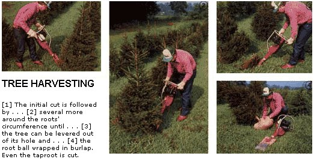
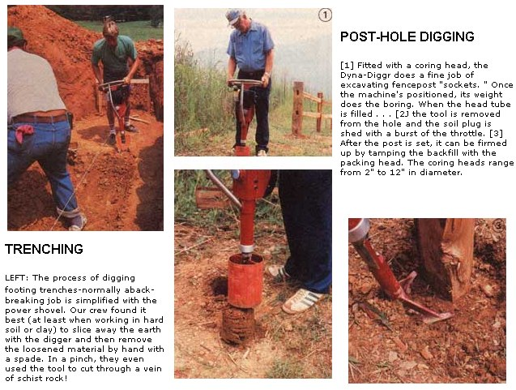

The chain saw replaced the two person crosscut saw. Will this tool make the shovel obsolete?
What would you think of a power tool that digs trees and shrubs . . . cuts trenches . . . excavates holes and footings . . . slices sod . . . bores postholes (then tamps the soil after the posts are sunk) . . . peels off old shingles and floor tile . . . drives stakes . . . and just might do one or two other things that simply haven't been thought of yet?
Well, farfetched as it may sound, such a tool does exist, and it was designed (and is now being manufactured) nearly in MOTHER's own backyard. The machine is called a Dyna-Diggr, and the simplest way to describe it is to say it's a cross between a jackhammer and a barless chain saw!
A BACKYARD BRAINSTORM
Here's the story: Not too long ago, one of MOM's staffers attended a county agricultural extension service seminar on growing and harvesting Christmas trees. There he met a fellow named Ken Lanter, who represents a local manufacturing firm called Brisco, Inc . . . . and who was having a heck of a good time encouraging attendees to speculate on the nature of the mechanical gadget he was toting around.
Well, after stumping a good number of people, Ken had the heart to show them how it worked . . . and in the process aroused the curiosity of our amateur nurseryman, who persuaded Mr. Lanter to demonstrate it to some of MOTHER's Eco-Village staffers.
We'll admit that we were initially skeptical: At first glance, the digger looks like a topheavy shovel with an engine for a handle. That, combined with its 47-pound weight, raised a few eyebrows among our small group . . . until Ken cranked 'er up and freed a fourfoot live pine-clean as a whistle-in a minute and ten seconds. (He apologized for the delay, explaining that "dyna" digging normally averages less than a minute, with the record standing at 15 seconds for nursery-size trees!)
While we were examining, and using, the device, Ken filled us in on its development. It seems that a mountain logger and tree farmer from Franklin, North Carolina-Gerald Woods by name-had put together a crude motor-driven shovel some time ago to aid him in harvesting his crop more quickly.
Gerald wasn't known as a man of many words, but his uncanny mechanical ingenuity was something of a local legend. The motordigger was just one of the "secret" things he kept in his shed and fiddled with on occasion. It took the efforts of a few trusted friends and neighbors and a lot of persuasion by Ken to finally convince the understandably cautious Mr. Woods to sell the digger's manufacturing rights to Brisco and to work with the firm's engineers to develop a compact, commercial-grade version of that early prototype.
SOFT-TECH BUT TOUGH
The Dyna-Diggr that evolved from Gerald's backyard experimentation is mechanically as straightforward as a chain saw. It consists of a two-stroke, horizontally mounted Tecumseh engine fixed to a plate-steel box housing that has a stout, hollow pillar extending from its base.
A centrifugal clutch on the engine shaft beltdrives a pulley mated to a second parallel shaft that rides in bearings mounted within the steel housing . . . and an eccentric on that shaft moves a connecting rod which, in turn, transfers its linear motion to a guided yokeandplunger rod that passes through the base pillar. The wearing parts are grease-lubricated within the sealed housing, and the shovel is bolted to the portion of the rod that extends through the lower pillar. The belt-drive system remains outside the housing but is equipped with a removable dustcover for convenient servicing.
So, you see, the tool's action is reciprocal . . . but almost invisibly so. The driven plunger rod moves in and out only 3/8 of an inch, but that dimension was discovered to be optimum; too great a stroke merely causes the machine to hop and to transfer motion to the operator, rather than to the blade, and too little movement is ineffectual.
PUT TO THE TEST
By now, you're probably wondering what the machine is like to use. Well, it's no picnic. An honest working day with the digger will wear anyone down. However, we're willing to venture that by the end of the same period of time a person wielding an ordinary spade would be closer to being exhausted, and would have accomplished noticeably less work.
In the main, our experiences with the DynaDiggr were good ones. The folks at Brisco asked us to use and abuse the piece of equipment, but at the same time they advised us that the tool was not intended to be a rock cutter, concrete chipper, or pry bar.
With that in mind, our first real test involved digging the footing trenches for our latest construction project, a prefabricated earthsheltered' dome. During the course of that operation, the crew came upon a solid vein of schist rock, and darned if it didn't run in the same direction as the one in which they were working! The "Double-D" slowed down considerably, but even after being pressed to the limit by two of our huskiest staffers, it completed the job at hand with only one sheared shovel bolt to show for all its effort.
We shared a similar success with the limited tree digging we tackled. The procedure merely amounted to aiming the spade into the earth at a 30° or 45° angle and making one deep plunge cut, then following that operation with several more just like it all around the circumference of the earthen root ball. The shovel head is long and wide enough to take healthy bites, so levering the tree-dirt ball and all-from its hole and into the burlap was a cinch, since even the stubbornest roots gave way under the constant chopping of the spade's tip.
Post-hole digging was another story. In normal soil, the coring head (nothing more than a short steel tube of the appropriate diameter, with an inside-beveled cutting edge) functioned well. It nibbles its way into the earth to its full length; then, when the tool is lifted from the ground, the plug of dirt remains within the tube until it's knocked free with a jazz of the throttle.
However, when we inadvertently sank some holes over a buried section of old driveway paved with granite road bond, the DynaDiggr just couldn't get through that barrier, despite the machine's constant thumping assault. With the addition of an angled cutting tip, its performance in the packed granite was better but still mediocre . . . and that component hampered the tool's effectiveness in normal soil conditions. However, as noted above, we were impressed by the ease with which we could remove a plug of earth up to about 22" in depth, using the standard coring head . . . and saw some real potential in the machine for nursery owners who do a lot of replanting.
In summary, we'd have to say that the DynaDiggr is not for everyone, if only because it retails for $995 (though it may be available through rental outlets in the future). Is it worth it? For the homeowner who might use it just once in a while, probably not. But for a professional landscaper or nursery operator, or even a homesteader with a cash tree crop, the machine comes close to being indispensable, purely because-with the different attachmentsit can do so dang much! The basic tool comes with a 6" X 8" X 18" aircraft-quality chromemoly steel spade and a 90-day limited warranty, and the various implements are available as options (or Brisco will do custom tool-head fabrication starting at $30). The Dyna-Diggr folks can be contacted at 251 Buckeye Cove Rd., Swannanoa, NC 28778, if you want any more information . . . or would just like to tell them of a new use for their brainchild!
|
 |
 |
|